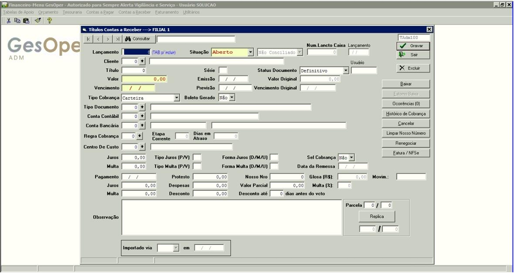

Contas a Receber

🗂️ Manutenção de Títulos - Contas a Receber
Pode ser acessado pelo seguinte caminho: Gesoper >> Financeiro >> Contas a Receber >> Manutenção de Títulos
Visão Geral
No módulo de Contas a Receber, todas as receitas da empresa são registradas, podendo ser inseridas de forma manual ou geradas automaticamente por meio de integrações. Este módulo permite a gestão eficiente de títulos, com funcionalidades que suportam a criação, edição, exclusão e baixa de títulos, além de oferecer opções para controle de status e observações detalhadas.
Funcionalidades de Cadastro
Para cadastrar ou gerenciar um título, é necessário informar os seguintes dados:
- Código do Cliente Identificador único do cliente associado ao título.
- Número do Título Número que identifica o título, podendo ser acompanhado ou não de uma série.
- Série do Título Informação complementar ao número do título, quando aplicável.
- Status do Documento Define o estado do título, que pode ser: Definitivo, Provisório, Sem Previsão ou Contingenciamento. No caso de Contingenciamento, a Tesouraria pode realizar a baixa do título marcando essa opção.
- Juros e Multa Podem ser informados em valores brutos ou percentuais, com frequência de cobrança mensal ou anual. Para operações bancárias, é necessário verificar as exigências do banco, como multa em percentual único e juros em valor diário.
- Data de Remessa e Nosso Número Preenchidos automaticamente ao gerar a remessa para integração com arquivos CNAB no Gesoperfômetro (ferramenta WEB).
- Data de Pagamento e Data de Vencimento Preenchidas automaticamente ao cadastrar o título, incluindo valores relacionados a Protesto, Glosa, Juros, Despesas, Valor Parcial, Multa e Desconto.
- Movimentação Campo preenchido automaticamente com informações da tela de movimentação financeira.
- Observação Campo opcional para anotações adicionais, quando necessário.
Ações Disponíveis
A tela de manutenção de títulos oferece botões que permitem realizar diversas ações:
- Excluir Habilitado quando o módulo de Tesouraria não está em uso. Por padrão, os lançamentos de caixa são gerenciados pelo módulo de Tesouraria.
- Estornar Baixa Permite alterar um título de Quitado para Aberto. Após a quitação, o título não pode ser alterado, exceto para anotações no campo de observações.
- Exceções Permite registrar informações de forma mais organizada, como instruções específicas (ex.: "Não pagar este documento, uma nova duplicata será emitida com desconto referente ao serviço").
Consulta e Alteração de Títulos
A funcionalidade de consulta e alteração permite visualizar e editar informações de títulos já cadastrados, garantindo maior controle e organização. Esta seção está em desenvolvimento e será detalhada em futuras atualizações.
Benefícios Operacionais
⚡ Eficiência no Registro
Automatização e integração permitem registrar receitas de forma rápida e precisa.
🎯 Controle de Status
Gerenciamento detalhado dos status dos títulos, com opções como Definitivo, Provisório e Contingenciamento.
📊 Visibilidade Financeira
Informações detalhadas e organizadas para melhor acompanhamento das receitas.